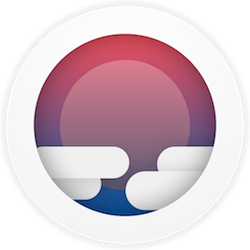

Julian Weiss
iOS entrepreneur, design pragmatist, music enthusiast, student.
twitter
github
instagram
linkedin
angellist
Submarine is a feature-packed, community-driven Reddit app. Personally designed and developed in 2015 and 2017.
Available on iOS.
Gampets is a fun way to share pet videos and get pets adopted. iOS Product Developer 2016.
Available on iOS.
DribbleUp is the first basketball tracking app, a breakthrough tech with a custom ball. iOS Lead 2015-2016.
Available on iOS and Android.
Pianote is a streamlined app for musicians. Practice your music smarter.
Coming February 2017.
Flogg is an innovative commerce platform for friends. iOS Developer 2016.
Available on iOS.
REVUU is an NYC startup reinventing the future of the magazine. Lead iOS/CTO 2015-2016.
Available on iOS and Web.
 Smock is a powerful responsive web mockup tool I helped build using Swift in 2016.
Available on Mac App Store.
Cold Open is an intuitive TV show app I helped build Summer 2015 as a part of The Appical.
Available on iOS.
Giffage is an all-in-one GIF keyboard. Implemented core features Summer 2015.
Available on iOS.

 Submarine is a feature-packed, community-driven Reddit app. Personally designed and developed in 2015 and 2017. Available on iOS.
Submarine is a feature-packed, community-driven Reddit app. Personally designed and developed in 2015 and 2017. Available on iOS.
 Gampets is a fun way to share pet videos and get pets adopted. iOS Product Developer 2016. Available on iOS.
Gampets is a fun way to share pet videos and get pets adopted. iOS Product Developer 2016. Available on iOS.
 DribbleUp is the first basketball tracking app, a breakthrough tech with a custom ball. iOS Lead 2015-2016. Available on iOS and Android.
DribbleUp is the first basketball tracking app, a breakthrough tech with a custom ball. iOS Lead 2015-2016. Available on iOS and Android. Pianote is a streamlined app for musicians. Practice your music smarter. Coming February 2017.
Pianote is a streamlined app for musicians. Practice your music smarter. Coming February 2017. Flogg is an innovative commerce platform for friends. iOS Developer 2016. Available on iOS.
Flogg is an innovative commerce platform for friends. iOS Developer 2016. Available on iOS. REVUU is an NYC startup reinventing the future of the magazine. Lead iOS/CTO 2015-2016. Available on iOS and Web.
REVUU is an NYC startup reinventing the future of the magazine. Lead iOS/CTO 2015-2016. Available on iOS and Web.
 Cold Open is an intuitive TV show app I helped build Summer 2015 as a part of The Appical. Available on iOS.
Cold Open is an intuitive TV show app I helped build Summer 2015 as a part of The Appical. Available on iOS. Giffage is an all-in-one GIF keyboard. Implemented core features Summer 2015. Available on iOS.
Giffage is an all-in-one GIF keyboard. Implemented core features Summer 2015. Available on iOS.